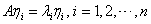
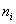

5.2 方阵的相似变换
一、方阵的相似变换的概念
同阶方阵的相似关系有以下三条性质： （1）反身性： （2）对称性：若 （3）传递性：若，则 当两个同阶方阵相似时，它们有很多共同的性质。 |
|
证：（1）设，则由
|
|
例1：设与是相似的矩阵。（1）求出参数x和y的值；（2）求A的特征值。 解：（1）因为，由 （2）因B为对角矩阵，B的对角元即为B的特征值，而A与B相似，所以A的特征值也是。 |
二、矩阵可对角化的条件
|
由例1得到启发，因为B是对角矩阵，它的行列式的值就是B的对角元的乘积，它的秩就是对角元中非零元素的个数，特别它的对角元就是B的特征值，而当A与对角矩阵B相似时，也就容易知道
证：必要性： 设A可对角化，即有可逆矩阵P，使，则有 把P按列分块，即，由P可逆知为线性无关向量组。 而，又 所以由，即为，由此得列向量等式 。 |
|
说明：可逆矩阵P的n个列向量就是A的n个线性无关的特征向量。 充分性： 设A有n个线性无关的特征向量，且，则以为列向量组构造矩阵P，即，则P为n阶可逆矩阵，而且满足  ，则为对角矩阵。 ，则为对角矩阵。说明：本定理充分性证明告知，当n阶方阵A可对角化时，即A有n个线性无关的特征向量，只要令就为可逆矩阵，使得为对角矩阵，而且对角矩阵 |
|
那么，对于给定的n阶方阵A，如何能确保它有n个线性无关的特征向量呢？有以下定理：
在定理2.3中，我们只对A的互不相同的特征值各取一个属于它的特征向量，则把它们放在一起的向量组 |
由此定理，只要是n阶方阵A的所有两两不同的特征值，则方阵A能否对角化就取决于S中向量的个数是否为n。 因矩阵A的特征值中有重根的情形，不妨设是A的重特征值，于是，，那么对重特征值，如果相应特征矩阵的秩恰为，则齐次线性方程组 |
说明：当是一重根，即单根时，属于的线性无关特征向量有且仅有一个，故由定理2。5，讨论一个n阶方阵A能否对角化，关键看重特征值，只要对几重根，能有几个线性无关特征向量，就保证A可对角化，若当n阶方阵A无重特征值时，有以下推论： 推论：设n阶方阵A有n个互不相同的特征值 当然推论仅是方阵A可对角化的充分条件，而非必要的，例如单位方阵E本身就是对角矩阵，但 |
|
例2：问是否相似于对角矩阵？若是，则求出其相似标准形。 解：从特征值入手，即先计算A的特征多项式 ，则为A的特征值。 这里1为二重特征值，0为一重特征值。 对 可求出A的属于 ，可求出相应特征向量为，取可逆矩阵 ，则必有。 |
|
例3：问能否对角化？若能，求出可逆矩阵P，使为对角矩阵。 解： ，则为A的特征值。 对 |
|
例4：设二阶方阵A满足，其中，求矩阵A及，这里 解：由已知 令，必有，则 |
请认真答题，测试一下你对前面知识点的学习情况！
(单选题) 22．已知矩阵A与对角矩阵相似，则A2=（ ）
【答案】C
【解析】因为A与对角矩阵相似，故存在可逆矩阵P，使得,
故
【知识点】方阵的相似变换